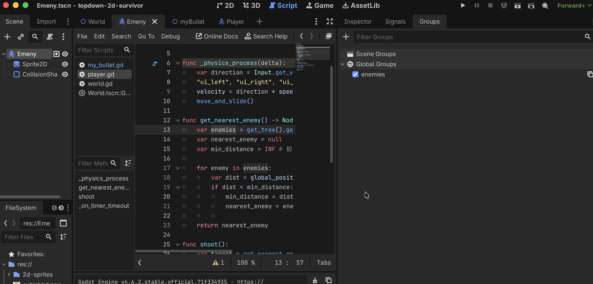
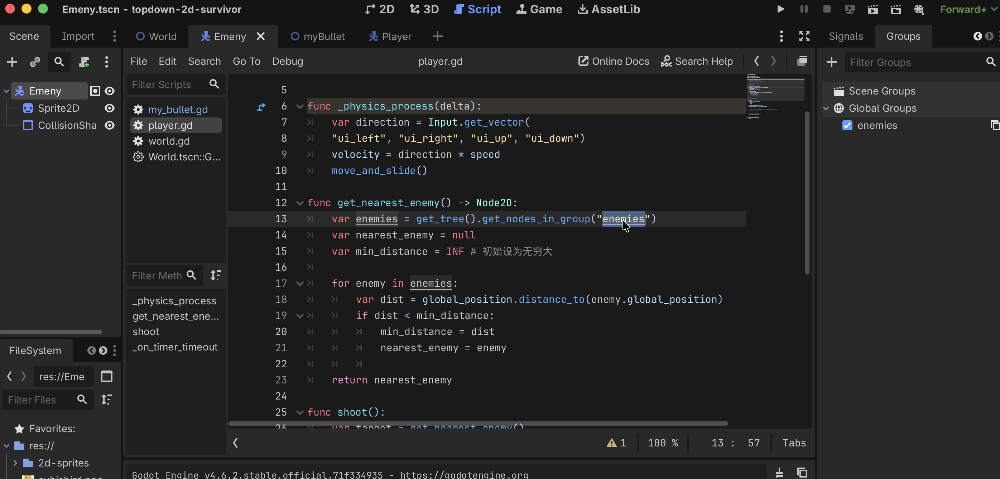

用 Group 全局标记 + 距离算法锁定最近敌人
打开 Enemy.tscn，在 Node → Groups 面板中为根节点添加标签：


在 Player.gd 中实现寻找最近敌人的函数：
# Player.gd
func get_nearest_enemy() -> Node2D:
# 获取场景中所有属于 enemies 组的节点
var enemies = get_tree().get_nodes_in_group("enemies")
var nearest_enemy = null
var min_distance = INF # 初始设为无穷大
for enemy in enemies:
var dist = global_position.distance_to(enemy.global_position)
if dist < min_distance:
min_distance = dist
nearest_enemy = enemy
return nearest_enemy
get_nodes_in_group 都能找到